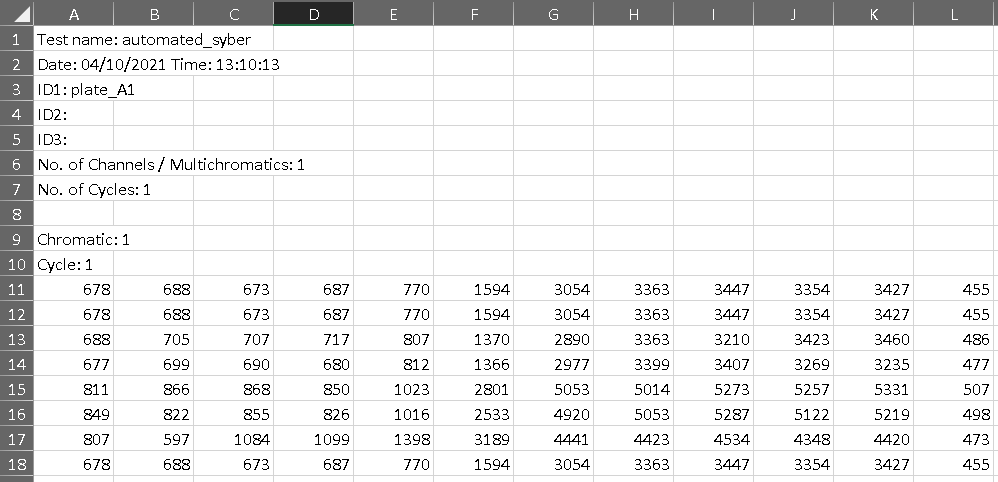

This tool
Accepted format
Accepted formats include a 10 point serial dilution of 2-3 replicates in either 96 or 384 well plates. The available positions for each format are shown below:

96 well layout options.

384 well layout options.
Meta data requirments
Meta data describes the plate contents: * Plate ID variable to link meta with the plate file of raw measurements * Location data describing the format and positions on the plate each assay sits * Treatment and cell ID information * Dose range information
head(example_meta)
#> plate_id position_id format replicates index compound cell starting_uM
#> 1 plate_4 pos_1 384w 3 test_3 Torin2 Dd2 0.04
#> 2 plate_4 pos_2 384w 3 test_3 Torin2 Dd2 0.04
#> 3 plate_4 pos_3 384w 3 test_3 Torin2 Dd2 0.04
#> 4 plate_4 pos_4 384w 3 test_3 BT-C10 Dd2 0.50
#> 5 plate_4 pos_5 384w 3 test_3 BT-C10 Dd2 0.50
#> 6 plate_4 pos_6 384w 3 test_3 NITD609 Dd2 0.04
#> dilution_factor
#> 1 2
#> 2 2
#> 3 2
#> 4 2
#> 5 2
#> 6 2Raw data format requirements
The analysis pipeline was developed to be compatible with an Omega Fluostar plate reader csv output (ASCII), which includes 3 required components:
- Data stored in files with a prefix - ‘TRno’ or ‘automated’.
- An ID variable set when reading the plate which matches the plate_id in the meta file (Omega prefixes with ‘ID1:’).
- Raw read data in plate format where well A01 begins in cell [1,11] of the file.

raw data format.